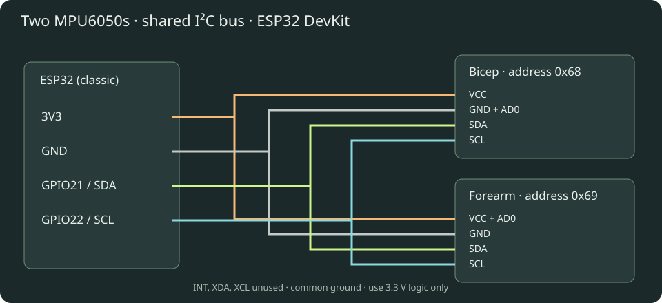

Download ESP32 sketch · Download setup guide
Armature — two-IMU arm tracker
Three.js viewer + ESP32 firmware, with BLE notifications and stationary pose calibration. Open dist/index.html through a local web server (not file://), or use the hosted site. The viewer includes a demo without hardware. Full illustrated setup is in dist/guide.html.
Motion Arcade
The home page now has Zombie Boxing, Target Rush, and the original Motion Lab. Connection and calibration are shared across modes; switching games keeps the BLE connection. The two arm quaternions keep the same 20-byte packet layout. Updated flags and commands support two-pose calibration.
- Zombie Boxing: enemies approach from ahead; two distinct right-arm punches defeat each one. Five health points, increasing waves, and 100 points per knockout. Enemies in reach attack every 2.3 seconds if not hit.
- Target Rush: hit as many illuminated targets as possible in 45 seconds.
- Live input: choose ESP32, connect and complete both calibration poses. Raise your right arm and punch forward toward the screen; pull back at least 9 cm before punching again. Face the same direction used at calibration. The left arm is an animated-model guard, not independently tracked.
- Keyboard / touch: an explicit simulation mode. Press Space or the Punch button. It never injects hits into live-input rounds.
- Escape or Pause freezes a round. Stale/invalid tracking and hidden tabs automatically pause live play; press Resume after recovery. Switching mode or input starts a new round.
Punch detection derives wrist motion from the two tracked segment orientations, uses a swept collision test, and requires outward velocity plus retraction between hits. It is a game heuristic, not a measured punching force. Keep space around you and use controlled movements. Live hardware punch feel still needs testing with the actual wearable.
Hardware and wiring
Assumption: a classic ESP32 DevKit/WROOM with Bluetooth LE, and two MPU6050 breakout modules (such as GY-521), not bare sensor chips. ESP32-S2 has no Bluetooth. Other ESP32 variants require checking their pinout and changing SDA_PIN/SCL_PIN.

| ESP32 | Bicep MPU6050 | Forearm MPU6050 |
| 3V3 | VCC | VCC and AD0 |
| GND | GND and AD0 | GND |
| GPIO21 | SDA | SDA |
| GPIO22 | SCL | SCL |
Bicep address is 0x68; forearm is 0x69. Leave INT, XDA and XCL disconnected. Power off before wiring. Use common ground and 3.3 V pull-ups, never 5 V on ESP32 GPIO. Most breakouts already have pull-ups; check yours before adding any. Three breakout pull-ups appear in parallel, so check the combined resistance and remove redundant pull-ups if needed; do not blindly add another set. If absent, add one 4.7 kΩ SDA-to-3V3 and one SCL-to-3V3 resistor. Keep wires short, secured, and separated from high-current wiring. Long arm-length I²C cables can become unreliable at 400 kHz: reduce Wire.begin clock to 100000 if needed and measure the resulting sample rate. USB power from a power bank is convenient for a wearable demo. Insulate the boards.
Flash
1. Install Arduino IDE 2. Add https://espressif.github.io/arduino-esp32/package_esp32_index.json under Preferences → Additional Boards Manager URLs.
2. In Boards Manager install esp32 by Espressif Systems, version 3.x. Select ESP32 Dev Module for a classic ESP32; select the actual serial port.
3. Library Manager: install NimBLE-Arduino by h2zero, version 2.5.1. Wire is built in; no MPU library is needed. No heart-rate sensor library is needed. Firmware uses the NimBLE 2.x callbacks.
4. Open firmware/ArmTracker/ArmTracker.ino, upload, and open Serial Monitor at 115200 baud. If upload stalls, hold BOOT during connection and release once writing begins.
5. Expect MPU 0x68: OK, MPU 0x69: OK, and Ready. A missing sensor halts startup; fix wiring and reset. An MPU at 0x69 still normally reports WHO_AM_I 0x68.
Sensor mounting and two-pose calibration
Secure one MPU6050 to the right bicep and the other to the right forearm. Each board may be mounted in any fixed orientation; their printed axes do not need to line up. They must not slip between poses or during play. Both sensors must move with their own arm segment.
1. Arm-down: stand upright with your right arm straight at your side, fingertips pointing down and palm toward your thigh. Click Capture arm-down and stay still for three seconds.
2. T-pose: after the first capture succeeds, extend your right arm sideways to your right at shoulder height, elbow straight and palm toward the floor. Keep facing the same direction. Click Capture T-pose and stay still for three seconds. Keep the thumb facing forward through the movement; do not twist the forearm independently.
3. When Calibration complete appears, move normally or start a game. The display initially shows your current T-pose; lowering the arm brings it down in the viewer.
The firmware averages gravity and gyro readings for each pose, detects movement, and constructs a separate sensor-to-world mounting frame for each IMU. No hard-coded sensor axis is required. It learns gyro bias from both captures. The two known poses resolve the mounting orientation relative to your body; they do not measure compass heading, body translation, or arm length. Enter your arm lengths separately.
The first capture must be arm-down and the second a sideways right-arm T-pose. Both measured gravity directions must be roughly perpendicular. Similar/opposite poses are rejected. A bad T capture can be retried without recapturing arm-down; Cancel / start over discards both. Movement resets the three-second window. A capture times out after 20 seconds, allowing a retry. Minor gravity magnitude variation is tolerated; the old fixed -X gravity requirement is removed.
Two-pose calibration is required after startup or disconnection. The old startup bypass is removed. Sensor mounting frames and biases are kept in RAM. Recalibrate if a sensor slips, temperature changes noticeably, or yaw drifts. Six-axis MPU6050 sensors still cannot correct yaw drift indefinitely. Remain upright and avoid twisting your torso between captures.
The website checks a capability flag before allowing calibration. If it says to flash two-pose firmware, replace the entire old sketch with the current download and reconnect. This prevents the new UI from accidentally running the old one-pose calibration.
Browser and Bluetooth
1. Use Chrome on macOS, Windows, or a supported Android device, with Bluetooth enabled. Safari/Firefox and Chrome on iPhone/iPad do not provide this native Web Bluetooth flow. Linux support may require experimental features and an appropriate BlueZ setup; a supported desktop is easier.
2. Serve locally: python3 -m http.server 5173 --bind 127.0.0.1 --directory dist, then open http://localhost:5173 in Chrome. Node users can also run npm start if Python is installed. HTTPS hosting also works. Plain HTTP LAN IP addresses and file:// are not suitable. Open as a top-level page; embedded previews may block Bluetooth through Permissions Policy. The browser device picker requires a user click.
3. Click Connect ESP32, select Armature-ESP32, and approve the browser's device access. Do not pair through a Bluetooth Classic serial terminal: this uses BLE GATT. No PIN, serial COM Bluetooth port, Wi-Fi or backend is required.
4. Capture arm-down and then T-pose, then move. Enter measured shoulder-to-elbow and elbow-to-wrist distances in cm. Drag to orbit; scroll to zoom.
5. To reconnect, use Connect again. Close other BLE clients if the board is unavailable; reset the board if necessary. After changing firmware services, remove the old site's Bluetooth permission or restart Bluetooth if the OS retains a stale GATT cache.
The app distinguishes demo, live, calibration and stale states. A packet gap of over 500 ms marks the display stale and freezes the last received pose. Last packet age is browser receive freshness, not measured sensor-to-screen latency. BLE access is local to your browser; this app sends no motion data to a backend. The prototype BLE service has no bonding or authentication: only use with a nearby trusted demo setup.
Tracking and latency
The MPU6050 is a six-axis accelerometer/gyro, with no magnetometer. Gyro integration plus proportional gravity correction estimates orientation. Gravity corrects tilt but cannot correct yaw. Independent sensors drift in heading, and acceleration can temporarily corrupt tilt. This is a prototype, not precision motion capture.
The shoulder is fixed. Elbow = shoulder + rotated upper-arm vector; wrist = elbow + rotated forearm vector. Both segment quaternions are absolute orientations in the same reference, so the forearm rotation is not incorrectly applied twice. Hand follows forearm; there is no wrist sensor. Body translation is not measured. Do not double-integrate acceleration to claim absolute position.
Targets: 200 Hz register sampling/fusion, 94 Hz gyro / 98 Hz accelerometer digital low-pass, 100 Hz BLE notification attempts. Each notification is 20 bytes and fits the default ATT MTU of 23: no MTU negotiation dependency. Requested connection interval is 7.5–15 ms, zero peripheral latency; the central OS chooses the actual interval. Loop scheduling, I²C and BLE can lower actual frequency. Rendering uses requestAnimationFrame and the newest orientation, with no smoothing queue. Camera damping does not smooth sensor motion. UI counters update at 10 Hz. No Wi-Fi radio is started.
Do not promise a particular end-to-end latency: measure physically (e.g. high-speed video of real arm + display). Monitor received rate, missing sequence numbers and packet age. Sequence numbers count attempted notifications and wrap at 65536. Missing packets include BLE enqueue/delivery losses; this is not an RF-only metric. Main-loop stalls over 25 ms invalidate calibration to avoid integrating an unreliable interval. Runtime I²C failures invalidate calibration and display a fault.
Binary protocol
Service: 8c310001-7a94-4b2d-b7bb-5de91f2d9a10
Notify: 8c310002-7a94-4b2d-b7bb-5de91f2d9a10
Control (write with response): 8c310003-7a94-4b2d-b7bb-5de91f2d9a10
Control 0x01 starts a fresh arm-down capture; 0x02 captures T-pose after a successful arm-down capture; 0x03 cancels calibration. A GATT write acknowledges receipt; notifications report the current phase, progress, and completion.
| Bytes | Meaning |
| 0–1 | uint16 little-endian notification sequence |
| 2 | flags: bit0 calibrated, bit1 capturing, bit2 sensor fault, bit3 rejected, bit4 arm-down saved/T next, bit5 capturing T, bit6 invalid pose geometry, bit7 two-pose firmware |
| 3 | calibration percent, 0–100 |
| 4–11 | bicep quaternion w,x,y,z; signed int16 LE divided by 32767 |
| 12–19 | forearm quaternion w,x,y,z; same encoding |
Firmware sends reference-relative world rotations. Internal axes are X right, Y forward, Z up. Browser maps them to Three.js by conjugation with a -90° X rotation (X right, Y up, Z backward).
Verification and dependencies
npm test runs binary decoder and sequence-wrap tests; npm run check checks JavaScript syntax. Three.js is pinned to 0.180.0 through a CDN import map; first load needs internet. Google fonts are optional with local fallbacks. Firmware is compile-checked for esp32:esp32:esp32 using Arduino-ESP32 3.3.11 and NimBLE-Arduino 2.5.1. scripts/test-calibration-math.py compiles the actual quaternion math from the sketch and tests 2,000 different sensor mounting orientations, current T-pose initialization, and degenerate-pose rejection. JavaScript tests cover the calibration flow, game logic and packet decoding. Actual wearable accuracy and motion performance still require testing on your boards; no hardware was flashed during authoring.
Sources
- Espressif Arduino installation
- NimBLE-Arduino 2.3.6 server callbacks
- MPU6050 product specification